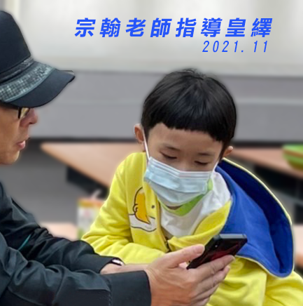

「2022國際小學數學競賽(IIMC 2022)
方皇繹(五年級) 獲台灣唯一金牌」
IIMC競賽一般被認為是國內參與難度最高的小學競賽。
五年級皇繹同學亮麗的表現：
錄取「國立清華大學高中學生科學研究人才培育計畫-數學組」進階班。
「2021 AMC10」獲「Certificate of Achievement」。
「2022 AMC8」獲「Honor Roll of Distinction」
皇繹同學過去這兩年與未來參與了獵豹：
（1）S101,S102,S111高中資優進度課程（2）FS高一/高二輕競賽
（3）GGB,Python,C/C++程式設計課
（4）Sci101/Sci102/Sci11國中資優自然
（5）FUC1微積分
皇繹同學參與獵豹所有適合的課程。在獵豹全面安排自己的學習，不論是作業完成，班群和老師討論。除此之外，熱心的皇繹爸爸也時常在班群中協助其他孩子。這次競賽九章的培訓中，皇繹發現有另一位獵豹同學表現很好，特地私下請我轉達對方媽媽，實踐了資優生共學共好，欣賞讚美優秀同儕。方爸爸給皇繹的教育，不僅培養了優異的數理能力，更是讓皇繹以開闊分享的心胸，在資優學習的道路上繼續前行！
皇繹在獵豹學習的心得分享：
從109年12月獵豹網課開設以來，我就開始參加，那時我讀4年級，到現在已經超過一年半，15種課程了。爸爸常笑說我以後可能可以獲得一張獵豹vip卡。不過我發現宇倫學長也修了很多課，因為從前他的暱稱總是很長一串。還記得獵豹推出的第一個課程是AMC10，那時是每2~3天就有5題線上作業，有的簡單，有的卻很有挑戰性，爸爸就算比我早解出來，也要我繼續自己想，他說自己想出來，才是自己的。
AMC10結束後，隔了20天才又開了第2門課-AMC10深水區賦格，在等待期間，少了獵豹，生活中就好像少了什麼很重要的東西。賦格的每次上課，我大概只能聽懂80%，老師說這就是可以進步的空間。而那些練習題也讓我能重新看一下自己有什麼缺漏的地方。在獵豹體驗數學很快樂，想不到獵豹又開了其他課，SCI 讓我看到了和國小完全不同，真正的理化課，老師也總是很開心的教我們，還有搭配實驗課，我很喜歡做實驗，可惜太少了。Geogebra是我第一次接觸數學軟體，能夠畫出圖形幫助我解幾何和代數題目，真是好用。朱博士還帶我進入Python，老師真的很有耐心的幫我解答所有疑問，讓我能持續進步。而引導我學習C/C++的炳富老師也不斷帶領我成長，給我機會去說出自己的想法，甚至兩位老師都還會針對我的問題錄影片來指導我，他們讓我能看見結合數學與程式語言的大門，去探索更寬廣的世界。
獵豹的課有很多超強的老師，每一位老師都讓我看到很多新的東西。還有許多高手學長姐、學弟妹，我竟然曾經和建中科學班榜首的吳席綸學長在FS01當同學，真是太光榮了。而每次上課大家都會發表自己的想法互相討論，真的很棒。一門一門的獵豹課開下來，最遺憾的是時間不夠，我沒辦法都上。
而且我發現獵豹一直在「優化」課程，一門課上完，就會檢討調整，讓我們能學得更好。像現在的 FJ 搭配 JA，以後的 FS 搭配 S 等等。
希望獵豹能一直開課下去，讓我能一直體驗不同層次的樂趣。謝謝獵豹所有的老師帶著我飛翔，也謝謝尤耀星學長的媽媽，讓我能上到這些優秀老師們的課。更謝謝宗翰老師集合這麼多好老師，(每一個元素(老師)都最棒，每一個子集合(不同老師組成的課程)都是最好的集合，連自我思考的空集合也不例外)讓所有喜歡數學的學長學姐學弟學妹們能一起享受數學。
